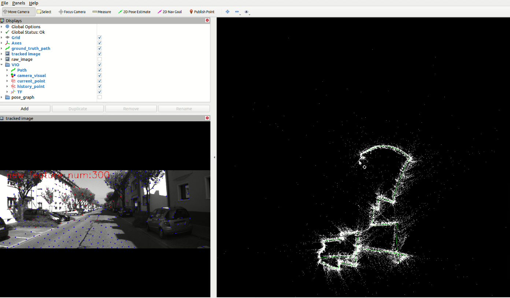
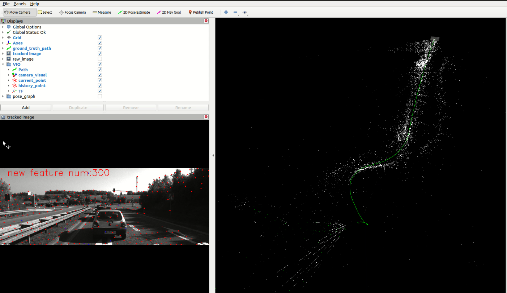

Feature Number vs. Vehicle Velocity based on VINS-Mono
This page will discuss the relationship between tracked feature number and vehicle forward velocity when using VINS-Mono. The performance of VINS Mono on KITTI dataset is not the best, just make sure the algorithm can run from start to end without reset.
The conclusion → faster speed will have less tracked feature points on highway.
Introduction
Rosbag Convertor
based on the tutorial of " Qiu Shaochen Zhihu ", we need the raw + unsync data which contains 100HZ IMU measurements.
be careful about IMU timing disorder.
be careful about IMU time jumping since it's not hard sync with video data
Interpolate and re-sync IMU data to give KITTI a 100 Hz IMU and GNSS data and correct the timestamps with vision image. You need synced+rectified data and unsynced+unrectified data
gauxonz/KITTI-interp (github.com) (not tried)
catkin_simple is quite old and inconvenient for usage. You have to put each component parallel with the kitti_to_rosbag_for_vio repo.
Camera and IMU Calibration Parameters

Given the transformation from "IMU to Lidar" and "Lidar to Camera", it's feasible to compute the transformation from "Camera to IMU"
fromnumpyimport*importnumpy as npT_imu_to_lidar=np.mat([[9.999976e-01,7.553071e-04,-2.035826e-03,-8.086759e-01],[-7.854027e-04,9.998898e-01,-1.482298e-02,3.195559e-01],[2.024406e-03,1.482454e-02,9.998881e-01,-7.997231e-01],[0,0,0,1]])#camera 0, grayT_lidar_to_camera=np.mat([[7.967514e-03,-9.999679e-01,-8.462264e-04,-1.377769e-02],[-2.771053e-03,8.241710e-04,-9.999958e-01,-5.542117e-02],[9.999644e-01,7.969825e-03,-2.764397e-03,-2.918589e-01],[0,0,0,1]])T_camera_to_imu=T_lidar_to_camera.I*T_imu_to_lidar.Iprint(T_camera_to_imu)'''[[0.00592965-0.017599450.999827511.10180905][-0.999981190.001491320.00595681-0.81577896][-0.0015959-0.99984405-0.017590280.24790873][0.0.0.1.]]'''
Little Tricks on Tuning VINS-Mono
dynamic calibration will make the result worse.
dynamic time offset estimation will make the result worse.
acc noise and gyro noise is quite important. High value
suppress the sanity check when necessary in case of failure reset
%YAML:1.0#common parametersimu_topic: "/imu_data"image_topic: "/cam00/image_raw"#camera calibration model_type: PINHOLEcamera_name: cameraimage_width: 1392image_height: 512distortion_parameters: k1: -3.745594e-01 k2: 2.049385e-01 p1: 1.379375e-03 p2: -7.084798e-02projection_parameters: fx: 7.188560e+02 fy: 7.188560e+02 cx: 6.071928000000e+02 cy: 1.852157000000e+02# Extrinsic parameter between IMU and Camera.estimate_extrinsic:0 # 0 Have an accurate extrinsic parameters. We will trust the following imu^R_cam, imu^T_cam, don't change it. # 1 Have an initial guess about extrinsic parameters. We will optimize around your initial guess. # 2 Don't know anything about extrinsic parameters. You don't need to give R,T. We will try to calibrate it. Do some rotation movement at beginning. #If you choose 0 or 1, you should write down the following matrix.#Rotation from camera frame to imu frame, imu^R_camextrinsicRotation: !!opencv-matrix rows: 3 cols: 3 dt: d data: [0.00592965, -0.01759945, 0.99982751, -0.99998119, 0.00149132, 0.00595681, -0.0015959, -0.99984405, -0.01759028]#Translation from camera frame to imu frame, imu^T_camextrinsicTranslation: !!opencv-matrix rows: 3 cols: 1 dt: d data: [1.10180905,-0.81577896, 0.24790873]#feature traker paprametersmax_cnt: 300 # max feature number in feature trackingmin_dist: 30 # min distance between two features freq: 10 # frequence (Hz) of publish tracking result. At least 10Hz for good estimation. If set 0, the frequence will be same as raw image F_threshold: 1.0 # ransac threshold (pixel)show_track: 1 # publish tracking image as topicequalize: 1 # if image is too dark or light, trun on equalize to find enough featuresfisheye: 0 # if using fisheye, trun on it. A circle mask will be loaded to remove edge noisy points#optimization parametersmax_solver_time: 0.04 # max solver itration time (ms), to guarantee real timemax_num_iterations: 10 # max solver itrations, to guarantee real timekeyframe_parallax: 10.0 # keyframe selection threshold (pixel)#imu parameters The more accurate parameters you provide, the better performance#acc_n: 2.0000e-3 # accelerometer measurement noise standard deviation. #0.2 0.04#gyr_n: 1.6968e-04 # gyroscope measurement noise standard deviation. #0.05 0.004#acc_w: 5.0000e-3 # accelerometer bias random work noise standard deviation. #0.02#gyr_w: 0.003491 # gyroscope bias random work noise standard deviation. #4.0e-5acc_n: 0.8 # accelerometer measurement noise standard deviation. #0.2 0.04gyr_n: 0.04 # gyroscope measurement noise standard deviation. #0.05 0.004acc_w: 5.0000e-3 # accelerometer bias random work noise standard deviation. #0.02gyr_w: 0.003491 # gyroscope bias random work noise standard deviation. #4.0e-5g_norm: 9.81007 # gravity magnitude#loop closure parametersloop_closure: 0 # start loop closureload_previous_pose_graph: 0 # load and reuse previous pose graph; load from 'pose_graph_save_path'fast_relocalization: 0 # useful in real-time and large projectpose_graph_save_path: "/home/maploc/workspace/output/pose_graph/" # save and load path#unsynchronization parametersestimate_td: 0 # online estimate time offset between camera and imutd: 0.08 # initial value of time offset. unit: s. readed image clock + td = real image clock (IMU clock)#rolling shutter parametersrolling_shutter: 0 # 0: global shutter camera, 1: rolling shutter camerarolling_shutter_tr: 0 # unit: s. rolling shutter read out time per frame (from data sheet). #visualization parameterssave_image: 1 # save image in pose graph for visualization prupose; you can close this function by setting 0 visualize_imu_forward: 0 # output imu forward propogation to achieve low latency and high frequence resultsvisualize_camera_size: 0.4 # size of camera marker in RVIZData Analysis
Video Link:
\\bosch.com\dfsrb\DfsCN\DIV\XC\Engineering\domain\WAVE3\04_PER\05_maploc\00_dataset\KITTI\unsync\online_video
Urban in Germany
track 2011_09_30_27 duration: 1:55
acc_noise: 0.8
gyro_noise: 0.04
The red test below is the optical flow tracked points for single frame.
The red dots below is the total feature number of feature manager from previous frame.
The blue dots below is the incoming feature points which are required to be tracked at least twice. Hence smaller than 300.
Th green line below is the vehicle forward velocity.
track 2011_10_03_27 duration: 7:51
acc_noise: 0.8
gyro_noise: 0.04
The red test below is the optical flow tracked points for single frame.

The red dots below is the total feature number of feature manager from previous frame.
The blue dots below is the incoming feature points which are required to be tracked at least twice. Hence smaller than 300.
Th green line below is the vehicle forward velocity.
Highway in Germany
track 2011_10_03_42 duration: 2:01
acc_noise: 0.04
gyro_noise: 0.004
The VINS Mono has failed at the beginning right turn and get reset later.
The red test below is the optical flow tracked points for single frame.
The red dots below is the total feature number of feature manager from previous frame.
The blue dots below is the incoming feature points which are required to be tracked at least twice. Hence smaller than 300.
Th green line below is the vehicle forward velocity.
track 2011_10_03_47 duration: 1:27
acc_noise: 0.4
gyro_noise: 0.01
The VINS Mono has failed at right turn in the end. The camera orientation is totally wrong.
The red test below is the optical flow tracked points for single frame.

The red dots below is the total feature number of feature manager from previous frame.
The blue dots below is the incoming feature points which are required to be tracked at least twice. Hence smaller than 300.
Th green line below is the vehicle forward velocity.